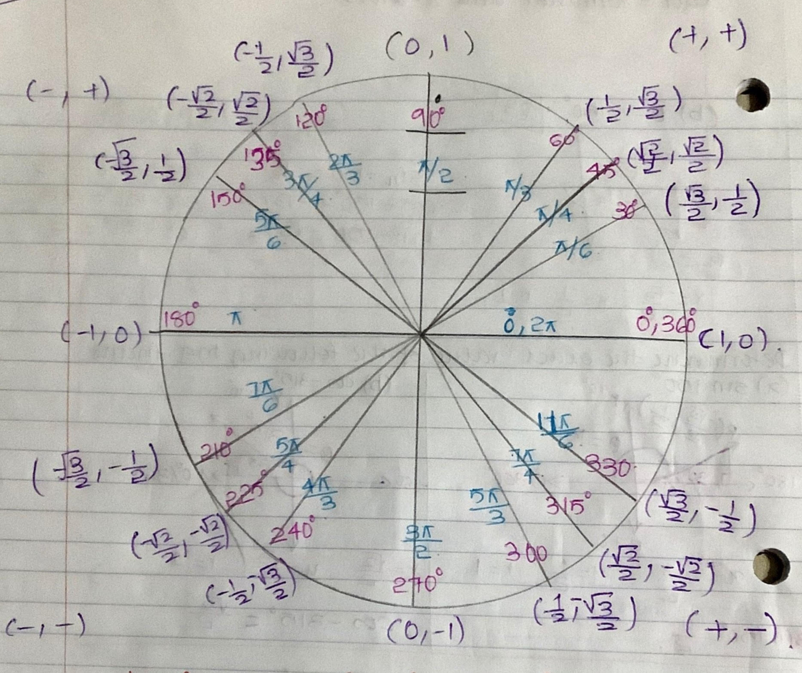
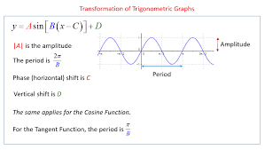
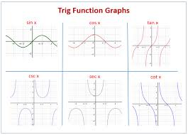

Angles and their Measures
- Basic Angle and Trig Vocab
- Angle: two rays with common vector.
- Positive Angle: counter clockwise direction.
- Negative Angle:clockwise direction
- Coterminal Angle:two angles in standard position with common terminals side.
- Initial Side(of an angle):starting ray.
- Terminal Side(of an angle):ending ray.
- Arclength: for circles of radius r, and central angle of Θ radians that subtend an arc whose length is s [s=rΘ] rad->[s=Θ/360(2πr)].
- Converting between degrees and radians: π radians=180o
- Area of a sector: are A of the sector of a circle with radius r formed by a central angle of Θradians is [A=1/2r2Θ] [A=Θ/360πr2]
Trignometric Functions and Unit Circle
- Trignometric Functions of ϴ in Standard Position
| sinϴ=opp/hyp |
cosϴ=adj/hyp |
tanϴ=opp/adj |
| cscϴ=hyp/opp |
secϴ=hyp/adj |
cotϴ=adj/opp |
- The Reciprocal Relation
- cscϴ=1/sinϴ
- secϴ=1/cosϴ
- cotϴ=1/tanϴ
If the terminal side of an angle lies on one of the axes,ϴ is a QUADRANT ANGLE
If an angle is non-quadrantal, its reference angle is defined as the COTERMINALangle formed by the terminal side of ϴ and the x-axis

- For every 360o or 2π radians, the sine and cosine functions repeat their values. Therefore, the sine and cosine functions are periodic. The period of a function is the distance required for a function to complete one full cycle.
- The graph of the sine and coisne functions have a maximum value 1 and a minimum value of -1. The midine of a graph is the horizontal line that passes exactly iin themiddle between the graph's mmaximum and minimum points. The amplitude of a graph is defined to be 1/2 the distance between the max and min values. The amplitude can also be described as the vertical distance between the midline and one of the extreme points.
period=2π/b

